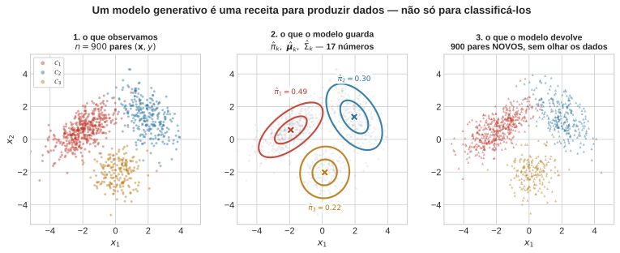
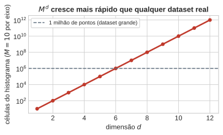
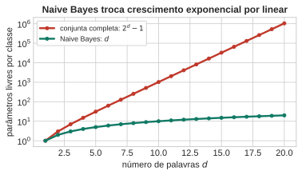
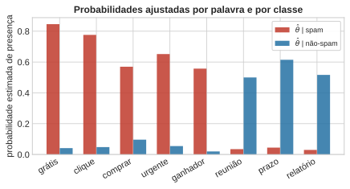
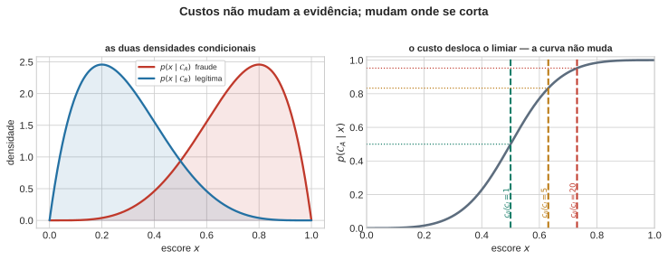

Independência, Naive Bayes e Teoria da Decisão
Aula 2 — Fundamentos Estatísticos do Aprendizado Supervisionado
1 Teorema de Bayes e Modelos Generativos
Tudo que a Aula 1 construiu para duas classes generaliza sem atrito para \(K\) classes \(\mathcal{C}_1,\dots,\mathcal{C}_K\) (PRML §1.2, pp. 14–24; DLFC §2.1.2, pp. 26–28, mesma base usada na Aula 1). A regra da soma dá a marginal, a regra do produto dá o Teorema de Bayes:
\[ p(\mathcal{C}_k \mid \mathbf{x}) \;=\; \frac{p(\mathbf{x}\mid\mathcal{C}_k)\,\pi_k}{\sum_{j=1}^K p(\mathbf{x}\mid\mathcal{C}_j)\,\pi_j}, \qquad \pi_k = p(\mathcal{C}_k). \]
A regra de decisão que minimiza a probabilidade de erro continua sendo “decida pela conjunta maior”: \(\arg\max_k p(\mathbf{x}\mid\mathcal{C}_k)\,\pi_k\). A prova da Aula 1 foi ponto a ponto e nunca usou \(K=2\) como hipótese — ela generaliza para \(K\) classes exatamente do mesmo jeito.
1.1 O modelo generativo
O modelo generativo por trás disto tem uma leitura em duas etapas: primeiro a natureza sorteia uma classe segundo \(\pi_k\), depois sorteia \(\mathbf{x}\) segundo \(p(\mathbf{x}\mid\mathcal{C}_k)\).
1.2 Modelo generativo
Repare no que o Teorema de Bayes exige que você tenha em mãos. Para calcular \(p(\mathcal{C}_k\mid\mathbf{x})\) é preciso \(\pi_k\) e \(p(\mathbf{x}\mid\mathcal{C}_k)\) — e esses dois objetos, juntos, são mais do que um classificador. Eles são uma descrição completa de como os dados vieram a existir:
- sorteie uma classe \(\mathcal{C}_k\) com probabilidade \(\pi_k\);
- dada a classe, sorteie \(\mathbf{x} \sim p(\mathbf{x}\mid\mathcal{C}_k)\).
Isso é literalmente uma receita executável. Nada aí é metafórico: são duas chamadas a um gerador de números aleatórios, na ordem. Um modelo que especifica os dois passos é chamado generativo porque dele se pode gerar — produzir pares \((\mathbf{x}, y)\) novos, que nunca estiveram no conjunto de treino.
1.3 O teste: jogue fora os dados
A figura abaixo executa esse teste com três classes gaussianas em \(\mathbb{R}^2\). Observamos 900 pares rotulados (painel 1). Ajustamos por máxima verossimilhança e guardamos apenas \(\hat\pi_k\), \(\hat{\boldsymbol\mu}_k\) e \(\hat\Sigma_k\) — 17 números ao todo, contra os 1800 valores dos dados originais (painel 2). Então descartamos os dados, e pedimos ao modelo 900 pares novos, executando os dois passos da receita (painel 3).
O painel 3 não é uma cópia do painel 1 — nenhum ponto se repete, e não há mais nenhum dado guardado em lugar nenhum. Mesmo assim, a nuvem tem a mesma estrutura: três grupos, nas mesmas posições, com as mesmas orientações e as mesmas proporções relativas. O modelo comprimiu 1800 números em 17 e reteve o que era estrutural.
Compare com o painel 1 e você já enxerga também as limitações do modelo: se os dados reais tivessem caudas pesadas, assimetria, ou um grupo em forma de banana, o painel 3 continuaria devolvendo elipses. Um modelo generativo é uma teoria sobre a origem dos dados, e o que ele gera é o retrato mais honesto dessa teoria — inclusive de onde ela está errada. Essa é, aliás, a forma mais barata de diagnosticar um modelo generativo: gere, e olhe.
NotaO contraste que dá nome à família
Nem todo classificador é generativo. A regressão logística (Aula 6) modela \(p(\mathcal{C}_k\mid\mathbf{x})\) diretamente, sem nunca construir \(p(\mathbf{x}\mid\mathcal{C}_k)\) — é um modelo discriminativo. Ele responde muito bem “que classe é este \(\mathbf{x}\)?”, e é incapaz de responder “me dê um \(\mathbf{x}\) plausível da classe 2”. A pergunta sequer faz sentido para ele: ele nunca representou como \(\mathbf{x}\) se distribui.
Discriminativo decide. Generativo decide e sonha.
1.4 A ponte para “IA generativa”
Quando se fala em modelo generativo em IA — texto, imagem, áudio — o significado da palavra é exatamente este, sem nenhuma extensão metafórica. A estrutura é a mesma de duas etapas:
| modelo gaussiano desta aula | modelo generativo moderno | |
|---|---|---|
| condição | classe \(\mathcal{C}_k\), sorteada de \(\pi_k\) | prompt, rótulo, ou ruído latente |
| objeto gerado | \(\mathbf{x}\in\mathbb{R}^2\) | imagem, sequência de tokens, áudio |
| \(p(\mathbf{x}\mid\text{condição})\) | gaussiana, 5 parâmetros por classe | rede neural, \(10^9\)–\(10^{12}\) parâmetros |
| gerar = | 2 chamadas ao gerador aleatório | amostragem da rede, passo a passo |
O que mudou entre as duas colunas não foi o conceito, foi a família de distribuições usada para representar \(p(\mathbf{x}\mid\text{condição})\). E a razão de a segunda coluna precisar de bilhões de parâmetros é a que a seção anterior já estabeleceu: \(\mathbf{x}\) ali tem dimensão altíssima — um milhão de pixels, milhares de tokens — e a densidade conjunta nessa dimensão é o objeto que nenhum histograma alcança.
Toda a história dos modelos generativos é a história das respostas a essa mesma pergunta: como representar \(p(\mathbf{x})\) em alta dimensão sem contar células? O resto desta aula apresenta a resposta mais brutal e mais antiga — Naive Bayes: suponha que as coordenadas não interagem. É uma resposta ruim, e é instrutivo entender exatamente quão ruim, porque a mesma tensão reaparece, em forma mais sofisticada, em tudo que veio depois.
DicaO que muda entre um modelo generativo gaussiano de 5 parâmetros e uma IA generativa moderna com bilhões — o conceito, ou só a família de distribuições?
Uma frase. Compare com um colega antes de avançar (2 min).
2 O que fazer em alta dimensão?
A Aula 1 terminou com uma receita fechada, provada sem nenhuma suposição de família paramétrica:
\[ p(\mathcal{C}_k\mid x) \;=\; \frac{p(x\mid\mathcal{C}_k)\,\pi_k}{\sum_j p(x\mid\mathcal{C}_j)\,\pi_j} \qquad\Longrightarrow\qquad \text{decida } \arg\max_k \; p(x\mid\mathcal{C}_k)\,\pi_k . \]
São dois objetos a estimar: a priori \(\pi_k\) — que se estima contando rótulos — e a densidade condicional de classe \(p(x\mid\mathcal{C}_k)\), uma por classe. O denominador não depende de \(k\) e nem chega a ser calculado para decidir. A prova de otimalidade foi ponto a ponto e não mencionou a dimensão de \(x\) em lugar nenhum — ela continua válida trocando \(x\) por \(\mathbf{x}\in\mathbb{R}^d\).
Então a receita funciona em alta dimensão? É só trocar \(x\) por \(\mathbf{x}\)?
A regra, sim. A estimação de \(p(\mathbf{x}\mid\mathcal{C}_k)\), não. E dá para ver exatamente onde ela quebra contando células de um histograma.
2.1 Contando células: por que \(d=2\) não custa o dobro de \(d=1\)
Tome o estimador mais ingênuo possível para \(p(\mathbf{x}\mid\mathcal{C}_k)\): um histograma com 10 divisões por eixo.
\(d=1\). Dez células por classe. Com mil exemplos de treino, algo como cem pontos por célula: a altura de cada barra é estimada com precisão decente.
\(d=2\). A resposta imediata é “vinte células — dez para \(x_1\), dez para \(x_2\)”. Mas dez células em \(x_1\) e dez em \(x_2\) estimam apenas as duas marginais \(p(x_1\mid\mathcal{C}_k)\) e \(p(x_2\mid\mathcal{C}_k)\), e marginais não determinam a conjunta. Para representar \(p(x_1,x_2\mid\mathcal{C}_k)\) é preciso uma célula para cada par de divisões: \(10\times 10 = 100\). Os 80 números excedentes são exatamente a informação de interação — o quanto a distribuição de \(x_2\) muda conforme \(x_1\) cai em uma faixa ou em outra.
\(d=3\). Uma célula por tripla de divisões: \(10^3 = 1000\). E assim por diante: cada nova variável não soma dez células, multiplica por dez o número de células, porque ela pode interagir com toda a configuração já existente das anteriores.
Em geral, \(M\) divisões por eixo e \(d\) eixos dão \(M^d\) células. Com \(M=10\):
| \(d\) | células \(10^d\) | pontos por célula com \(n=10^6\) |
|---|---|---|
| 1 | \(10\) | \(100\,000\) |
| 2 | \(100\) | \(10\,000\) |
| 3 | \(1\,000\) | \(1\,000\) |
| 6 | \(10^{6}\) | \(1\) |
| 10 | \(10^{10}\) | \(0{,}0001\) |
Com dez variáveis — um problema pequeno para qualquer padrão real — um conjunto de um milhão de exemplos deixa a esmagadora maioria das células vazia. E uma célula vazia não estima densidade baixa: estima zero, que zera a conjunta \(p(\mathbf{x}\mid\mathcal{C}_k)\pi_k\) e manda o log para \(-\infty\) — a mesma patologia dos zeros exatos que a Aula 1 encontrou na Beta, agora por falta de dados em vez de por escolha de priori.
Repare, porém, no que seria estimável: as \(10\times d = 100\) contagens marginais, com muitos pontos cada. O abismo entre 100 números confortáveis e \(10^{10}\) números impossíveis é precisamente o custo das interações. O resto da aula é sobre o que acontece quando se decide abrir mão delas.
2.2 O ponto não é “compute mais rápido”
Não é um problema de poder computacional. É um problema de dados: o número de observações necessárias para preencher as células cresce exponencialmente com \(d\), e nenhum orçamento de coleta razoável acompanha isso. A saída não é um histograma mais eficiente — é abandonar o histograma como estratégia de estimação em alta dimensão.
Isto é exatamente a promessa que a Aula 1 fez ao fechar (PRML §1.4, pp. 33–38; DLFC §6.1.1, pp. 172–174, tratamento moderno): sem impor nenhuma estrutura sobre \(p(\mathbf{x}\mid\mathcal{C}_k)\), ela não é estimável com dados finitos a partir de \(d\) moderado.

DicaPor que “faltam dados” para estimar \(p(\mathbf{x}\mid\mathcal{C}_k)\) em alta dimensão é diferente de “falta poder computacional”?
Explique a um colega em uma frase. Se comprássemos 100× mais GPUs, o problema desapareceria?
3 Independência e Naive Bayes
3.1 Independência
Duas variáveis \(x_i, x_j\) são independentes quando
\[ p(x_i, x_j) = p(x_i)\,p(x_j), \]
o que, pela regra do produto, é o mesmo que \(p(x_i \mid x_j) = p(x_i)\).
Esta segunda forma é a que dá a intuição: observar \(x_j\) não altera em nada a sua crença sobre \(x_i\). Informação sobre um não é informação sobre o outro.
3.2 Independência condicional
\(x_i\) e \(x_j\) são condicionalmente independentes dado \(z\) quando
\[ p(x_i, x_j \mid z) = p(x_i \mid z)\, p(x_j \mid z), \]
equivalentemente \(p(x_i \mid x_j, z) = p(x_i \mid z)\).
A leitura muda: uma vez conhecido \(z\), observar \(x_j\) não acrescenta nada sobre \(x_i\). Não que \(x_j\) seja irrelevante — ela pode ser muito informativa sobre \(x_i\); é que toda essa informação já está contida em \(z\).
3.3 As duas não são a mesma coisa
Nenhuma das duas implica a outra, e vale ver os dois contraexemplos.
(a) Causa comum. Sejam “grátis” e “ganhador” condicionalmente independentes dada a classe, com \(\pi_{\text{spam}}=0{,}5\) e \(p(x_1{=}1\mid\text{spam})=0{,}85\), \(p(x_2{=}1\mid\text{spam})=0{,}60\), contra \(0{,}03\) e \(0{,}02\) em ham. Marginalizando a classe pela regra da soma, as duas palavras aparecem juntas com probabilidade \(0{,}255\), contra \(0{,}44 \times 0{,}31 = 0{,}136\) se fossem independentes. São fortemente dependentes no corpus, ainda que condicionalmente independentes: ver “grátis” aumenta a crença em spam, que aumenta a crença em “ganhador”.
(b) XOR. Sejam \(x_1, x_2\) moedas honestas independentes e \(\mathcal{C} = x_1 \oplus x_2\). Marginalmente elas são independentes. Mas dado \(\mathcal{C}=1\) temos \(x_2 = 1-x_1\) com certeza — dependência perfeita. Condicionar criou dependência onde não havia.
3.4 Suposição de Independência e Naive Bayes
O exemplo canônico: classificar um e-mail como spam a partir da presença ou ausência de \(d\) palavras de um vocabulário, \(\mathbf{x} \in \{0,1\}^d\). Modelar \(p(\mathbf{x}\mid\mathcal{C}_k)\) sem estrutura significa modelar a distribuição conjunta de \(d\) variáveis binárias — um objeto com \(2^d - 1\) parâmetros livres por classe (o \(-1\) vem da restrição de que as \(2^d\) probabilidades somam 1). Para \(d=20\) palavras, isso já é mais de um milhão de parâmetros por classe, para um vocabulário de brinquedo.
Naive Bayes é a suposição mais brutal possível para resolver isso: independência condicional entre atributos, dada a classe (PRML §1.5.4, eqs. 1.84–1.85, p. 46; DLFC §5.3, §5.3.1–5.3.2, pp. 150–156):
\[ p(\mathbf{x}\mid\mathcal{C}_k) \;=\; \prod_{i=1}^d p(x_i \mid \mathcal{C}_k). \]
O diagrama não tem nenhuma seta entre os \(x_i\) — essa ausência é a suposição inteira, desenhada. Ela troca \(2^d-1\) parâmetros por \(d\): linear em vez de exponencial.

Um exemplo numérico pequeno, para tornar concreto. Vocabulário de 8 palavras; cada palavra tem uma probabilidade de aparecer dado spam e dado não-spam. Simulamos e-mails e ajustamos essas probabilidades por contagem.
flowchart TD
C(("𝒞ₖ")) --> x1["x₁ (#quot;grátis#quot;)"]
C --> x2["x₂ (#quot;reunião#quot;)"]
C --> x3["x₃ (#quot;urgente#quot;)"]
C --> xd["x_d"]

ImportanteA mesma armadilha da Aula 1, em outra forma
Se alguma palavra nunca aparecer nos e-mails de uma classe na amostra de treino, a contagem bruta dá \(\hat\theta = 0\), e um único e-mail de teste com essa palavra zera o produto inteiro — \(\ln 0 = -\infty\), exatamente o problema dos zeros exatos na Beta da Aula 1, só que aqui em forma discreta. A correção padrão é a suavização de Laplace: somar 1 ao numerador e 2 ao denominador (equivalente a uma priori Beta\((1,1)\) sobre cada \(\theta_i\)), garantindo \(0 < \hat\theta < 1\) sempre. É por isso que o ajuste acima já usa a versão suavizada.
Com as probabilidades ajustadas, a regra de decisão para um e-mail novo \(\mathbf{x}\) é comparar
\[ \log\frac{p(\text{spam}\mid\mathbf{x})}{p(\text{não-spam}\mid\mathbf{x})} \;=\; \log\frac{\pi_{\text{spam}}}{\pi_{\text{ham}}} \;+\; \sum_{i=1}^d \left[ x_i \log\frac{\theta^{\text{spam}}_i}{\theta^{\text{ham}}_i} + (1-x_i)\log\frac{1-\theta^{\text{spam}}_i}{1-\theta^{\text{ham}}_i}\right] \]
contra zero. Guarde esta fórmula — o Bloco de teoria da decisão vai mostrar que ela é linear em \(\mathbf{x}\), e por que isso não é coincidência.
3.5 O algoritmo Naive Bayes
A fatoração já dá o classificador inteiro. Note que ela não diz qual distribuição usar para cada \(p(x_i\mid\mathcal{C}_k)\) — essa escolha é sua, e é o único ponto do método em que se coloca conhecimento sobre o problema.
DicaNaive Bayes
Entrada: dados \(\{(\mathbf{x}^{(n)}, y^{(n)})\}_{n=1}^{N}\), com \(d\) atributos e \(K\) classes.
Escolha de modelagem: para cada atributo \(i\), uma família de distribuições \(\mathcal{F}_i\) para \(p(x_i\mid\mathcal{C}_k)\).
Treino
- Para cada classe \(k\): \(\quad\hat\pi_k = N_k / N\), com \(N_k\) o número de exemplos da classe \(k\).
- Para cada classe \(k\) e cada atributo \(i\): ajuste \(\hat p(x_i\mid\mathcal{C}_k)\) dentro da família \(\mathcal{F}_i\), usando apenas a coluna \(i\) das linhas da classe \(k\).
Predição — dado um novo \(\mathbf{x}\)
- Para cada classe \(k\): \(\quad s_k = \log\hat\pi_k + \sum_{i=1}^{d} \log \hat p(x_i\mid\mathcal{C}_k)\).
- Devolva \(\arg\max_k s_k\).
Três observações sobre o algoritmo:
- O passo 2 são \(d \times K\) ajustes unidimensionais independentes, cada um com todos os \(N_k\) exemplos da classe à disposição. Nenhum deles vê mais de uma coluna por vez. É por isso que o método escala trivialmente com \(d\).
- O passo 3 usa logaritmo, não o produto direto. Com \(d\) grande, o produto de centenas de números menores que 1 gera underflow numérico; a soma dos logs, não.
- Zeros precisam de tratamento. Se algum \(\hat p(x_i\mid\mathcal{C}_k)=0\), aquele atributo sozinho zera a conjunta e manda \(s_k\) para \(-\infty\), independentemente do que os outros \(d-1\) atributos digam. A correção é a da Aula 1: uma priori que soma contagens fictícias antes de normalizar.
3.5.1 A escolha do passo 2, em concreto
| tipo do atributo \(x_i\) | família típica \(\mathcal{F}_i\) | o que se estima por classe |
|---|---|---|
| binário (palavra presente / ausente) | Bernoulli | 1 probabilidade |
| categórico com \(M\) níveis | Categórica | \(M-1\) probabilidades |
| contagem (frequência de palavra) | Multinomial | taxa por termo |
| contínuo, forma conhecida | Gaussiana 1-D | \(\mu_{ik}, \sigma^2_{ik}\) |
| contínuo, forma desconhecida | histograma 1-D ou KDE | \(M\) contagens |
Nada obriga a usar a mesma família em todas as colunas: um problema com idade (contínua), estado civil (categórico) e “tem cartão de crédito” (binário) usa três famílias diferentes, uma por coluna, e o passo 3 soma os logs de todas indiferentemente. Essa modularidade é a vantagem prática mais subestimada do método.
DicaDê um exemplo de par de atributos em que a independência condicional do Naive Bayes parece particularmente errada — e outro em que parece razoável
Escreva os dois exemplos, num problema que você conheça.
4 Teoria da decisão
A Aula 1 tratou decisão de forma ad-hoc: duas classes, perda 0-1 ou uma matriz \(2\times2\) com custos \(c_{\mathrm{I}}, c_{\mathrm{II}}\). Chegou a hora de nomear o objeto geral — ele vale para \(K\) classes e perdas arbitrárias.
4.1 O objeto geral
Uma regra de decisão \(\delta\) mapeia cada observação \(\mathbf{x}\) para uma ação \(a \in \mathcal{A}\) — o espaço de ações, que não precisa coincidir com o espaço de classes \(\mathcal{Y}\). A opção de rejeição da Aula 1 já era um exemplo de \(\mathcal{A}\neq\mathcal{Y}\).
Dada uma função de perda \(L:\mathcal{Y}\times\mathcal{A}\to\mathbb{R}\), em que \(L(k,a)\) é o custo de tomar a ação \(a\) quando a verdade é \(\mathcal{C}_k\), o risco posterior de uma ação em \(\mathbf{x}\) é
\[ \rho(a\mid\mathbf{x}) \;=\; \sum_{k=1}^K L(k,a)\, p(\mathcal{C}_k\mid\mathbf{x}), \]
e a regra que minimiza a perda esperada global minimiza esse risco ponto a ponto — o mesmo argumento que provou a Aula 1:
\[ \boxed{\;\delta^\star(\mathbf{x}) = \arg\min_{a\in\mathcal{A}} \rho(a\mid\mathbf{x})\;} \]
Repare na divisão de trabalho: o modelo produz \(p(\mathcal{C}_k\mid\mathbf{x})\), a perda vem de fora, e \(\delta^\star\) é apenas a combinação dos dois. São peças separáveis, e é útil mantê-las separadas mentalmente.
4.2 O caso binário: custo e priori viram um limiar
Com \(\mathcal{A}=\mathcal{Y}=\{\mathcal{C}_A,\mathcal{C}_B\}\), acertos sem custo, \(L(A,B)=c_{\mathrm{I}}\) (a verdade era \(A\) e decidimos \(B\)) e \(L(B,A)=c_{\mathrm{II}}\), os dois riscos são \(\rho(A\mid\mathbf{x}) = c_{\mathrm{II}}\,p(\mathcal{C}_B\mid\mathbf{x})\) e \(\rho(B\mid\mathbf{x}) = c_{\mathrm{I}}\,p(\mathcal{C}_A\mid\mathbf{x})\). Decidir \(A\) quando o primeiro é menor equivale a
\[ p(\mathcal{C}_A\mid\mathbf{x}) \;>\; \underbrace{\frac{c_{\mathrm{II}}}{c_{\mathrm{I}}+c_{\mathrm{II}}}}_{\text{limiar } t}, \]
ou, na forma equivalente que a Aula 1 usou,
\[ \frac{p(\mathbf{x}\mid\mathcal{C}_A)}{p(\mathbf{x}\mid\mathcal{C}_B)} \;>\; \frac{c_{\mathrm{II}}\,\pi_B}{c_{\mathrm{I}}\,\pi_A}. \]
Toda regra de decisão binária é um teste de razão de verossimilhanças contra um limiar — e o limiar depende só de custos e prioris, nunca de \(\mathbf{x}\). Note também que só a razão \(c_{\mathrm{II}}/c_{\mathrm{I}}\) importa: dobrar os dois custos não muda decisão nenhuma.

O painel da direita é o ponto central da seção. A curva \(p(\mathcal{C}_A\mid x)\) é o que o modelo sabe: ela não se move quando os custos mudam. O que se move é o corte. Com custos simétricos, corta-se em \(t=0{,}5\); se bloquear um cliente legítimo custa 20 vezes mais do que deixar passar uma fraude, o limiar sobe para \(t = 20/21 \approx 0{,}95\) e o sistema só age quando está quase certo.
Isso separa duas discussões que na prática vivem confundidas: “o modelo está bom?” é uma pergunta sobre a curva; “onde cortar?” é uma pergunta sobre custos, e a resposta não está nos dados — está no domínio.
4.3 Escolher custos é escolher qual erro cometer
Não existe limiar que reduza os dois tipos de erro ao mesmo tempo. Deslocar \(t\) troca um pelo outro, sempre:
As duas curvas do painel (a) se cruzam exatamente em \(c_{\mathrm{II}}/c_{\mathrm{I}}=1\), a perda 0-1 — que é, portanto, uma escolha de custo como qualquer outra, e não um estado neutro. Usar acurácia como métrica é declarar que os dois erros custam o mesmo. Quase nunca custam.
NotaDe onde vêm os números
Os custos não são estimáveis a partir dos dados: eles são uma declaração sobre consequências, e cabe ao domínio fornecê-los. Um esboço plausível em detecção de fraude:
| consequência | ordem de grandeza | |
|---|---|---|
| \(c_{\mathrm{I}}\): deixa passar fraude | perda do valor transacionado | R$ 800 |
| \(c_{\mathrm{II}}\): bloqueia legítima | atendimento + risco de churn | R$ 40 |
Razão \(c_{\mathrm{II}}/c_{\mathrm{I}} = 0{,}05\), logo \(t \approx 0{,}048\): o sistema deve bloquear com pouca evidência. Inverta o cenário para triagem médica de baixa prevalência, em que um falso positivo dispara uma cascata cara de exames invasivos, e a razão se inverte junto.
Quando os custos são difíceis de fixar — e frequentemente são — o caminho usual é não fixar \(t\), e sim reportar o comportamento do sistema para toda a faixa de \(t\), deixando a escolha explícita para quem responde pela decisão.
4.4 Risco de Bayes, e a ressalva que importa
\[ R^\star \;=\; \mathbb{E}_{\mathbf{X}}\!\left[\min_{a\in\mathcal{A}} \rho(a\mid\mathbf{X})\right] \]
generaliza o erro de Bayes da Aula 1 — que era o caso particular de perda 0-1 — para perda arbitrária: é o menor risco esperado possível, dado o modelo verdadeiro.
E “dado o modelo verdadeiro” é a expressão que carrega o peso. A regra de Bayes é ótima se \(p(\mathcal{C}_k\mid\mathbf{x})\) estiver certa. O bloco anterior mostrou Naive Bayes estimando essa posteriori de um jeito estruturalmente errado, e ainda assim decidindo razoavelmente bem — o que mostra que a otimalidade da regra e a correção do modelo são duas perguntas separadas. Confundi-las é o erro mais comum ao avaliar um classificador probabilístico: uma posteriori mal calibrada pode acertar a decisão sob perda 0-1 e errar feio assim que os custos ficam assimétricos, justamente porque aí o limiar sai de \(0{,}5\) e passa a depender do valor da posteriori, não só de qual é a maior.
Três frases resumem a aula:
- A regra da Aula 1 generaliza sem atrito para \(K\) classes — o que não generaliza de graça é a estimação de \(p(\mathbf{x}\mid\mathcal{C}_k)\) em alta dimensão, porque o número de células cresce como \(M^d\).
- Naive Bayes troca \(2^d-1\) parâmetros por \(d\), impondo independência condicional dada a classe. A suposição é falsa e cobra um preço fixo em acurácia; o que muda com \(d\) não é o preço, é o fato de a alternativa deixar de estar disponível.
- Teoria da decisão dá a regra ótima dado o modelo, e os custos entram só pelo limiar — decidir bem e modelar bem são perguntas separadas.
Ponte para a Aula 3
Naive Bayes decide a estrutura da densidade antes de ver os dados: as coordenadas não interagem, e ponto. Árvores de decisão (Aula 3) fazem o oposto — não supõem nada sobre \(p(\mathbf{x}\mid\mathcal{C}_k)\) e constroem as divisões gulosamente a partir dos próprios dados, inclusive as interações que Naive Bayes descarta por decreto. O preço dessa liberdade é o assunto de lá.
5 Exercícios
5.1 Questões discursivas
Um colega propõe estimar \(p(\mathbf{x} \mid \mathcal{C}_k)\) em \(\mathbb{R}^{15}\) ajustando um histograma multidimensional com \(M=8\) células por eixo. Calcule o número de células e explique, em termos do argumento construído no Bloco 2, por que essa abordagem é inviável mesmo com um dataset de 10 milhões de pontos.
O Naive Bayes assume \(p(\mathbf{x}\mid\mathcal{C}_k) = \prod_i p(x_i\mid\mathcal{C}_k)\). Descreva uma situação de classificação (pode ser hipotética) em que essa suposição é fortemente violada, mas o classificador ainda assim tem boa acurácia. Que propriedade da fronteira de decisão explica essa aparente contradição?
(Adaptado de PRML, Exercício 1.25) Considere um problema de decisão de \(K\) classes com uma matriz de perda \(L\) arbitrária (não necessariamente 0-1). Escreva o risco posterior \(\rho(a\mid\mathbf{x})\) e a regra de Bayes correspondente. Em que condições sobre \(L\) a regra de Bayes se reduz à regra do posterior máximo (0-1)?
5.2 Questões de Verdadeiro/Falso
Cada bloco de 4 itens trata do mesmo tema. A questão só é considerada correta se todos os 4 itens forem julgados corretamente (deixar em branco tem penalidade de 20% da nota da questão).
DicaAlta dimensão e Naive Bayes
( ) Um histograma multidimensional com \(M\) células por eixo em \(d\) dimensões exige \(M^d\) células, um crescimento exponencial em \(d\).
( ) O problema de estimar \(p(\mathbf{x}\mid\mathcal{C}_k)\) em alta dimensão é fundamentalmente de poder computacional, não de escassez de dados.
( ) O Naive Bayes reduz o número de parâmetros de exponencial em \(d\) para linear em \(d\), ao custo de assumir independência condicional dada a classe.
( ) Independência condicional dada a classe implica independência marginal (incondicional) entre os atributos.
DicaTeoria da decisão e risco
( ) O risco posterior \(\rho(a\mid\mathbf{x})\) depende apenas da função de perda \(L\), não da distribuição posterior \(p(\mathcal{C}_k\mid\mathbf{x})\).
( ) Sob perda 0-1, a regra de Bayes coincide com a regra do posterior máximo.
( ) Mudar os custos de uma matriz de perda pode alterar a regra de decisão ótima sem alterar a posteriori \(p(\mathcal{C}_k \mid \mathbf{x})\).
( ) O risco de Bayes \(R^\star\) é sempre zero quando o modelo \(p(\mathbf{x}, \mathcal{C}_k)\) está corretamente especificado.
DicaBayes para \(K\) classes e modelos generativos
( ) A regra “decida pela conjunta maior” exige \(K=2\) classes; para \(K>2\) é preciso reformular o argumento da Aula 1 do zero.
( ) Num modelo generativo, a classe é sorteada primeiro (segundo \(\pi_k\)) e só depois \(\mathbf{x}\) é sorteado, condicional à classe.
( ) A evidência \(p(\mathbf{x}) = \sum_j p(\mathbf{x}\mid\mathcal{C}_j)\,\pi_j\) é a mesma para qualquer classe \(k\) avaliada no numerador do Teorema de Bayes.
( ) Substituir a família gaussiana por uma rede neural profunda muda o conceito de modelo generativo, não só a família de distribuições.
DicaO modelo generativo em duas etapas
( ) Um modelo generativo descreve, em duas etapas, como a natureza sorteia primeiro a classe e depois \(\mathbf{x}\), condicional à classe sorteada.
( ) “Jogar fora os dados” e ajustar só a fronteira de decisão diretamente é uma alternativa discriminativa ao modelo generativo.
( ) Um modelo generativo permite gerar novos dados sintéticos \(\mathbf{x}\) amostrando de \(p(\mathbf{x}\mid\mathcal{C}_k)\).
( ) Um modelo discriminativo modela diretamente \(p(\mathbf{x})\), sem nunca considerar a classe.
DicaGenerativo, discriminativo e “IA generativa”
( ) Um classificador puramente discriminativo dispensa a estimação de \(p(\mathbf{x}\mid\mathcal{C}_k)\).
( ) Modelos modernos de “IA generativa” usam o mesmo conceito de modelo generativo desta aula, mudando a família de distribuições usada, não o conceito.
( ) Um modelo discriminativo sempre precisa de mais parâmetros que um modelo generativo equivalente para o mesmo problema.
( ) Se o objetivo final é só classificar, um modelo discriminativo pode bastar sem nunca estimar \(p(\mathbf{x}\mid\mathcal{C}_k)\) explicitamente.
DicaContando células: a maldição da dimensionalidade
( ) Um histograma multidimensional com \(M\) células por eixo em \(d\) dimensões tem, ao todo, \(M^d\) células.
( ) Em \(d=1\), \(M=10\) células já bastam para uma estimativa razoável; em \(d=10\), \(M^d\) chega à ordem de \(10^{10}\).
( ) O problema de estimar \(p(\mathbf{x}\mid\mathcal{C}_k)\) em alta dimensão é, fundamentalmente, de poder computacional insuficiente.
( ) Comprar mais capacidade computacional (mais GPUs, por exemplo) resolveria o problema da maldição da dimensionalidade apresentado nesta aula.
DicaIndependência vs. independência condicional
( ) Independência (não condicional) entre \(X_1\) e \(X_2\) significa \(p(x_1,x_2) = p(x_1)\,p(x_2)\).
( ) Independência condicional dada a classe implica, em geral, independência marginal (incondicional) entre os atributos.
( ) O Naive Bayes assume independência condicional dada a classe, não independência incondicional entre os atributos.
( ) Duas variáveis podem ser fortemente dependentes marginalmente e, ainda assim, condicionalmente independentes dada uma terceira variável (como a classe).
DicaO algoritmo Naive Bayes
( ) O Naive Bayes soma logaritmos das verossimilhanças condicionais por atributo, em vez de multiplicar as verossimilhanças diretamente.
( ) Um único atributo com probabilidade estimada zero pode fazer o score de uma classe inteira ir a \(-\infty\).
( ) A correção padrão para esse problema é remover do modelo o atributo que produziu a probabilidade zero.
( ) Contagens fictícias (suavização), aplicadas antes de normalizar, evitam que uma probabilidade estimada seja exatamente zero.
DicaA escolha de família por atributo
( ) O Naive Bayes exige que todos os atributos usem a mesma família de distribuição (por exemplo, todos Gaussianos).
( ) Um atributo categórico com \(M\) níveis é tipicamente modelado por uma distribuição Categórica, com \(M-1\) parâmetros livres por classe.
( ) Um atributo contínuo de forma desconhecida pode ser modelado, dentro do Naive Bayes, por um histograma ou por KDE.
( ) Misturar famílias diferentes por coluna (idade Gaussiana, estado civil Categórico, por exemplo) quebra a soma de logs do passo 3 do algoritmo.
DicaO objeto geral da teoria da decisão
( ) O espaço de decisões \(\mathcal{A}\) sempre coincide com o espaço de classes \(\mathcal{Y}\).
( ) O risco posterior \(\rho(a\mid\mathbf{x})\) é a perda esperada de tomar a decisão \(a\), ponderada pela posteriori \(p(\mathcal{C}_k\mid\mathbf{x})\).
( ) A regra de Bayes \(\delta^\star(\mathbf{x})\) minimiza o risco posterior para cada \(\mathbf{x}\).
( ) A opção de rejeição é um exemplo em que \(\mathcal{A} \neq \mathcal{Y}\).
DicaO caso binário: custo e priori viram um limiar
( ) Sob perda 0-1, a regra de Bayes coincide com a regra do posterior máximo.
( ) Custos assimétricos entre os dois tipos de erro deslocam o limiar de decisão para longe de \(0{,}5\) na posteriori.
( ) Mudar os custos da matriz de perda muda a posteriori \(p(\mathcal{C}_k\mid\mathbf{x})\).
( ) Um custo \(c_{II}/c_I\) maior que \(1\) significa que o erro Tipo II é considerado mais grave que o erro Tipo I.
DicaRisco de Bayes e a ressalva que importa
( ) O risco de Bayes \(R^\star\) generaliza o erro de Bayes da Aula 1 para uma função de perda arbitrária.
( ) A regra de Bayes é ótima incondicionalmente, mesmo que o modelo \(p(\mathbf{x},\mathcal{C}_k)\) usado esteja errado.
( ) O Naive Bayes do Bloco 3 pode estimar mal a posteriori e, ainda assim, classificar bem sob perda 0-1.
( ) A teoria da decisão garante que o modelo usado para calcular a posteriori está correto.
5.3 Aviso
As questões de Verdadeiro/Falso e discursivas ficam sem solução neste arquivo — são para resolução autônoma do aluno, fora do horário de aula.